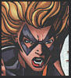

|
|
Allies of
James Rhodes
James Rhodes, also known as Rhodey. Rhodey is one of Starks closest friends. Introduced in issue 117 Rhodey fought in Nam and in a later issue is shown to have helped Iron Man escape Wong-Chu, is Tony's pilot.
Rhodey is also Tony's body guard at times. And was trusted to succeed as Iron Man when Tony's alcoholism was to much for him in issue 169. Tony later resumed being Iron Man, but not with out a fight with Rhodey.
Later on Rhodey again took the job of Iron Man after Tony died, but this time with the new War Machine armor Tony built for Rhodes to fulfill the Iron Legacy as War Machine. And even after Tony came back to fill the roll in issue 300, Rhodey was furious and still remained War Machine off on his own accord.
War Bird / Carol Danvers  Real Name: Carol Danvers Dual Identity: War Bird Citizenship: United States Usual Base of Operations: Avengers Mansion Current Group Membership: Avengers Intelligence: Street Smarts Fighting Skills: Summons energy from a White Hole Personal Weaponry: Force Blasts Other accessories: n/a Design and Manufacture of Paraphernalia: War Bird
IRON MAN APPEARANCES: IRON MAN Vol 3, 6 through out 28 mostly
"HAPPY" Hogan
"Happy" Hogan is one of Tony's first friends we meet. Introduced in Tales of Suspense issue 45.
Happy saved Tony's life in a racing accident. and that's how it all started. Tony tried to repay him with a check for 50,000 dollars, but Happy said all he needed was a job. So Tony hired Happy as a chauffeur / bodyguard.
Happy had a crush on Starks secretary "Pepper" Potts. even though Stark did also, there was something of a rival, but it didn't really blow up as a fight. Later on Happy and Pepper got married. Tony still has a flame for Pepper, but knows his life as Iron Man and his injured heart is to dangerous to fall in love.
Happy saved Tony once again from Titanium Man in issue 71 by bringing Iron Man his reverser ray. Happy almost got killed by a blast by Titanium Man, but barely pulled through.
Tony later shared with Happy and Pepper his secret identity. which some say Happy already knew for a while.
RETURN TO IRON MAN'S INTRODUCTION PAGE
|